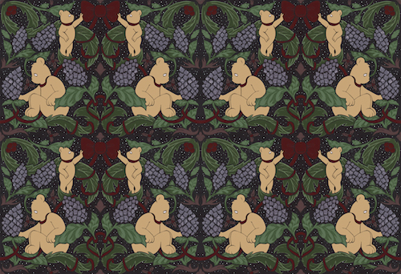

Photo by Thomas Whiteside
Interview and Text by Caroline D’Arcy Gorman
Stepping into Carly Mark’s East Williamsburg studio, I feel like I’ve fallen down the rabbit hole. Life-sized sculptures flank me as I walk into the space, and I’m careful not to trip over an enormous plush rat tail that has curled around my right sneaker. A native of suburban Detroit, Carly seems like a relatively fresh face in the New York art scene, but, in fact, she has been around since her teenage years. Moving to New York to study at The School of the Visual Arts, Carly dealt with her anxieties consequential of a lifestyle in the big city by focusing on what she was interested in – snacks, of all things. The result: a truly memorable journey through landmark New York bodegas and a cannon of eclectic and unique work. Ten years later, Carly is making strides in the contemporary art scene, her early focus and maturity having paid off. She just had her first-ever solo show in Athens, Greece to debut her video Good Buy Human which features comedian Eric Wareheim clad in a suit modeled after the Haribo Gold Bear. Among other provocative, Haribo-centric elements, the show featured bear shaped butt plugs and Gold-Bear inspired wallpaper.
Carly’s eclectic and distinctive work stems from a long-term fascination with pop art, video games, and anime. She spent high school days at The Cranbrook Academy of art in Bloomfield Hills, Michigan, chewing on Raisinets underneath giant Mark di Suvero sculptures on her school's campus. Perhaps her steady ambition stems from the women by whom she’s been surrounded since childhood: her mother, head of the Docent Program at the Detroit Institute of Art, and her grandmother, who was the biggest shareholder of Weight Watchers International during Carly’s childhood. Though she is clearly working on a myriad of projects, Carly’s studio has a clear sense of space and order to it. She welcomes me warmly, wearing a loose-fitting vintage Titanic t-shirt, navy Adidas, and old-school baggy jeans. After taking off her shoes - “I like to be comfortable,” she explains, curling up in her office chair - we begin.
DRØME: You moved to New York when you were just eighteen – what was your experience in the city at such a young age?
Carly: When I moved here, not only did I have to adjust to the chaos of the city, but also to being on my own. I would go to the bodegas; it was really interesting to walk through them because I had never actually seen them before in Detroit suburbs. If I was ever overwhelmed, it always helped to go into one of them, walk around and ground myself in that new familiarity. I’ve always been someone who feels comfortable with things that are habitual. If I find something I like, it repeats.
D: Would you describe this fascination with bodegas as an obsession?
C: Yes, because I have a tendency to be an obsessive person— I’m very focused. That obsession transcends bodegas of course. In college, for instance, I was always focused on my work in the context of academia: where would this be located in art history, what is the theory behind it—things you have to talk about with your faculty and peers. I was obsessed. When I graduated, no one was asking me these questions, I felt relief in not having to place myself within that kind of critique. So, I thought, “What do you really like?” and remembered all the times I had walked through bodegas. Those moments when I needed to figure out where I was in the city, or take a break from my classes. I came to the conclusion that I like snacks. In retrospect, my fixation with school critique, and then later bodegas, both correlate to the fact that I am obsessive.
D: And how did that obsession begin to manifest itself?
C: I started making paintings of snack bags. Eventually, I decided the best graphic design, and the work that had the most visceral response from other people, was Haribo. There is a commonly shared attachment to the brand.
D: You have a really unique style. Walking in here, I feel like I’ve been sucked into a whole new universe. How have your interests influenced your style of work?
C: I like things that are specifically geared towards human response. I’ve also always loved pop art, cartoons, and anime. I would wake up early every morning and watch Pokémon before middle school. On top of being aesthetically pleasing, there’s a kind of escapism to it, which I’ve always been drawn to; I feel strongly about fantasy.
D: Speaking of fantasy, social media serves as a fantasy world, in a way. What do you think about utilizing social media both as an artist and as an art form in and of itself?
C: It’s a really valid question, especially right now because it’s such new terrain. Before Instagram, this didn’t really exist. I mean, there have been art stars for a while, and then Andy Warhol changed everything with his approach, but it’s never been on this scale or this accessible before. I’m not so interested in branding myself or making work through social media per se; but, I have friends that do it and it works for them. It’s definitely fascinating to see how it all unfolds— it’s a brand new kind of artist. While making Good Buy Human, I thought about the socialself. I created exaggerated characters and then placed my friends within them. When we applied the face paint and costumes, an amplified version of these people entered the room. There’s something about being in costume and escaping your head that is very similar to social media. Private parts of you, sometimes things that are suppressed IRL, shine through.
D: Part of the reason people like it so much is because it’s so immediate.
C: It’s a little manic, which is very attractive. It’s very entertaining. So, going forward with the work, I’m really interested in these character studies – or more so, caricature studies. With social media, we’re all turning into caricatures of ourselves. So I’m doing that in a more obvious way. It speaks to a lot of work that I’ve always loved: Bruce Nauman’s Clown Torture, a lot of Paul McCarthy’s videos, and it also relates to the cartoons I used to watch when I was younger.
D: Watching Good Buy Human I can easily imagine a group of kids thinking it’s very funny and colorful and crazy, and then a group of adults watching it and thinking it’s funny, but in a darker, more poignant way. Can you speak a little bit to the concept of taking childhood memories and manipulating them in a darker way?
C: As a kid, so much goes over your head. Everything is right in front of your face but it’s too close to really understand. A lot of the video is a play on words, which is something that you don’t comprehend until you’re older. As adults, we have more perspective. Watching the video during my show was even unsettling for me. There’s a moment when Eric says, “Love you, Goodbye. Love you, now you’re dead” while a Haribo plane takes off behind him. I was flying to and from Greece during that period of time and my layovers were in Istanbul. Two days before my flight back to New York, the terrorist attack happened in the Istanbul airport. That’s the type of understanding you don’t really experience as a kid. I’m drawn to that duality, I want you to laugh and feel uncomfortable at the same time.
D: Well I think it does that perfectly. I absolutely love that video.
C: Thank you.
D: You mentioned that you aren’t concerned with making it as an artist here and now, but focusing more on your growth. How do you have the patience to take your time?
C: Taking your time is difficult. It’s that much more difficult as social media advances, because you’re watching other people. Not only do you feel personal urgency but there’s pressure from outside sources to deliver. Immediate attention and instant gratification are really addictive, but because I’ve been here for ten years and I’ve seen so many people come and go, I understand the importance of longevity. I know that patience pays off, especially in my own work. If I had been given the opportunity three years ago to have a big show in New York, what I would have produced is not necessarily what I would have wanted to represent me. The older I get, the more I understand myself, and so I’m taking my time.
D: Did you have patience when you were in art school at SVA? Can you talk a little bit about your experience there?
C: I actually did, I’ve always been a good student. I wasn’t involved in the New York social scene so much because I was really involved in school. Getting things done for critiques takes serious time, so I put that time in. There were moments when I felt like I was missing out socially, but I knew that in the long run, I would benefit far more from doing my reading assignments than going to parties. When I graduated from school and started to finally be social in New York, people would say to me, “Oh my god, you just moved here, Welcome!” and I said, “Nope, I’ve been here for five years, just in school.”
D: Your focus seems to already be paying off. From guest editing a magazine to producing videos, to creating these character suits, you do such varied and distinctive work. I’m really interested in your process of creating these characters. Where do you begin?
C: Well, for the video [Good Buy Human], it unfolded very quickly and fluidly– I made it a week before I left for Greece. I was getting ready to go and talking to the curator in Athens [Stamatia Dimitrakopoulos], when she said, “I think you need to make a video for the show...”
D: Just a week before?!
C: Yes, I only had ten days and she said, “Just do it!” So, I mentioned to my assistant [Leah James], who is the best and is really good at writing down the psycho things that come out of my mouth: “I want there to be a giant Haribo Gold Bear, a Candy Kong character from Donkey Kong Country” – because I used to sit and play that game when I was younger– “and I’m picturing you as a flight attendant.”
D: So she’s the flight attendant.
C: Yes, she’s the flight attendant.
D: Okay, cool, and you’re in this. (Pointing to the life-sized Candy Kong costume a couple feet away.)
C: I’m Candy Kong, and Eric Wareheim is Gold Bear, which was inspired by Haribo Gold-Bears. The Candy Kong character was, looking back, subconsciously related to the fact that everyone, especially in this new art terrain, wants you to be a sexy female. That, and I used to sit in my parents basement for hours playing Donkey Kong Country. Quite the dichotomy if you think about it.
D: Was your costume a “fuck you” to that sexy female fantasy, especially relating to women in art?
C: Yes. There is this whole question of voyeurism when it comes to the art world/social media and the idea that women are now in control. As in, we are placing ourselves within this context so we control the reigns. I don’t always feel like that’s the case. It’s as if we are feeding a different machine, but it’s not even a different machine, it’s the same one with new parts. I’m not one to deconstruct anyone’s values, I’m very much an artist in the way that I’m self-involved; I do what I want and as long as you don’t tell me what I am, I’m okay with you doing what you want. So, me dressing as Candy Kong was more of a “fuck you” to the people telling me what I am. We’ve had so many years of amazing female artists really putting their foot down, like the Guerrilla Girls. In hindsight, I’m definitely mirroring them with that outfit.
D: Escapism is a big part of your work; you mentioned being really into cartoons and anime as well as video games as a kid.
C: I’ve always been into things that are a form of psychological escape; getting outside of my head is really important for my inner balance. Now that I’m older, and I look at video games, I realize they’re so relevant because that’s exactly what social media is. Instagram is a game; you post a picture and you get likes. They’re points. It’s no different. Video games are also amazing to think about in the history of technological entertainment because for a while there was just audio, radio/music, and then visuals were introduced with the birth of cinema. Video games were the first moment when you could interface. There’s a term coined by the author Alexander Galloway, “gamic action,” which refers to the moment these things intersect for the first time— audio, visual, and action. With social media, you’re interfacing via algorithms, and on the other side of that algorithm is consistently another human being responding to your action. Social media is this next step.
D: Would you ever delve into video games as an art form?
C: Yeah, I’ve actually been really interested in that and I think that sometime in the future I’ll probably end up doing so. Everything feels like a video game these days because you can do anything from your phone. Even dating applications have changed things— people are meeting each other through various social media platforms. We’re all playing games now.
D: With a profile, and curated photos, yeah. It’s pretty strange.
C: As someone who has always been into escapism, characters and fantasy, I’m interested in watching people become their socialselves. Have you ever seen the movie Cool World? It’s this conflict between a cartoon world and real world— parallel universes that cross over. That’s exactly what’s happening here and now, the line has been crossed, and we straddle between real life and caricature. It doesn’t feel like just an Instagram profile at this point. We are what we Tumblr.
D: That’s really strange.
C: It’s fascinating to see, and so as I’m developing these characters, I think about that.
D: Do you think that you manage to keep yourself mostly out of that world through your art?
C: I don’t take it on as much as I could. I focus more on my work. In the future, I’ll end up where I want to be but only if I concentrate on its quality. I definitely love to watch other people on social media though. I find it inspiring when I’m making a character to look at Instagram profiles. In Good Buy Human, the characters came first. With the new videos, I have certain personalities in mind, which then develop into new characters. My friend Jordan [Wolfson] said to me, “I want to be a rat,” and given his personality, which I find very inspiring, it made total sense. There’s something really amazing that happens when you put people into characters. I felt it myself when I was Candy Kong. You experience that escapism that I’m interested in, and become a hyper version of yourself. The weirdest shit comes out of people and it’s amazing. I mean, the scenes in the video with Eric, most of that was ad-libbed. I put him in the Gold Bear costume and said, “Be naughty.”
D: He was so perfect. How did that all come about?
C: He was perfect. We met through friends and immediately clicked. He’s an incredible person and the things that he makes amaze me. Dr. Steve Brule is one of my favorite characters ever. I’ve had a lot of conversations with Eric about making work. When I was developing the Gold Bear character, I thought of him and it really just became a syncing of minds. It was like magic happened. And that’s because we’re close and our heads were in the same place. I could just see him as this naughty bear, and in a way I know he probably saw himself as the naughty bear. When I put him in the costume— magic.
D: Do you find that you have to put on a costume to achieve that level of escapism, or are you interested in working in various raw forms? Could you see yourself in a theatre production, film production, or just acting?
C: I could definitely see myself doing that. The reason I create these characters in my studio is because I’m interested in hyper versions of people. There are benefits to different forms of media— video, theatre, character play, acting, etc. It’s really just about getting an idea and figuring out the best way to execute it.
D: And what about the issue of Foundations Magazine that you guest edited with your grandmother on the cover? What is your relationship with your grandmother and how did that all come about?
C: I met the editors of Foundations and they asked me to curate a female issue. We decided the magazine would focus on women but without exploiting that fact. Ideas for covers were bounced around/which artists to include. I had wanted to do something on my grandmother for a while because she takes up a lot of space in my personal history and is this independent self-made woman. She became the largest shareholder of Weight Watchers International before I was born, so I grew up in a female-centric/business minded family. She, in a way, was her own brand. I pitched the idea to the editors, and long story short, Florine became the cover story. That was something I hadn’t seen before— someone making their own grandmother the face of a magazine, especially an art magazine. She’s so crazy, her house is crazy, her interior is on point, she’s got great style, and it turned out really sharp. She was pleased.
D: I’m sure she was!
C: [Laughs.] I don’t even think she really understood the context. I had her sitting in the entrance of [MoMA] PS1 signing issues during the release and there’s her face on the cover of the magazine lining the bookstores walls right when you walk in. I said to her, “You don’t know how funny this is.” People were lining up to get her signature and I kept thinking: “This is cool, but why do you all want my grandmother’s signature?! Why!” [Laughs.] I wrote the prose to accompany her photo story— my writing in that context turned the overall piece into an artwork.
D: You’ve done a lot of fantastic work over the years. What’s next?
D: Right now I’m in this beautiful place where I don’t have any deadlines. I just get to make work; there’s no rush. I’m really taking my time, and that feels really good.